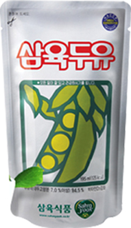

달콤 고소할거야 너
“삼육의 대표적인 두유들 달콤하고 고소한 먹거리로 당신께 삼육의
정직한 사랑을 맛보여드리겠습 니다. 당신은 고소할겁니다. 삼육에 사랑에...”
다른 두유의 방식을 모방하지 않고 직접 만든 순수 고소한 두유입니다. 삼육만의 개성적인 취향을 느 껴 보실 수 있습니다.
고객 사랑으로 이루어진 두유로 업계최초 두유파우치 개발로 시작해 더욱더 맛있는 두유를 만들었습니다.
그 결과 삼육식품은 10주년 고객 1등을 달성했습니다. 삼육의 사랑의 시작은 고객분들의 무한한 힘입니다.

삼육두유 파우치
특별히 엄선된 좋은 콩을 직접갈아,
대두에 영양이 골고루 첨가 된
맛있고 건강한 두유 입니다.
제품특징
- 대두를 주원료로 하는 알카리성 영양음료
- 필수아미노산이 골고루 함유된 식물성 영양 음료
- 비타민D3를 함유하여 칼슘흡수에 도움을 주는 음료
- 유당과 콜레스트롤 걱정 NO NO